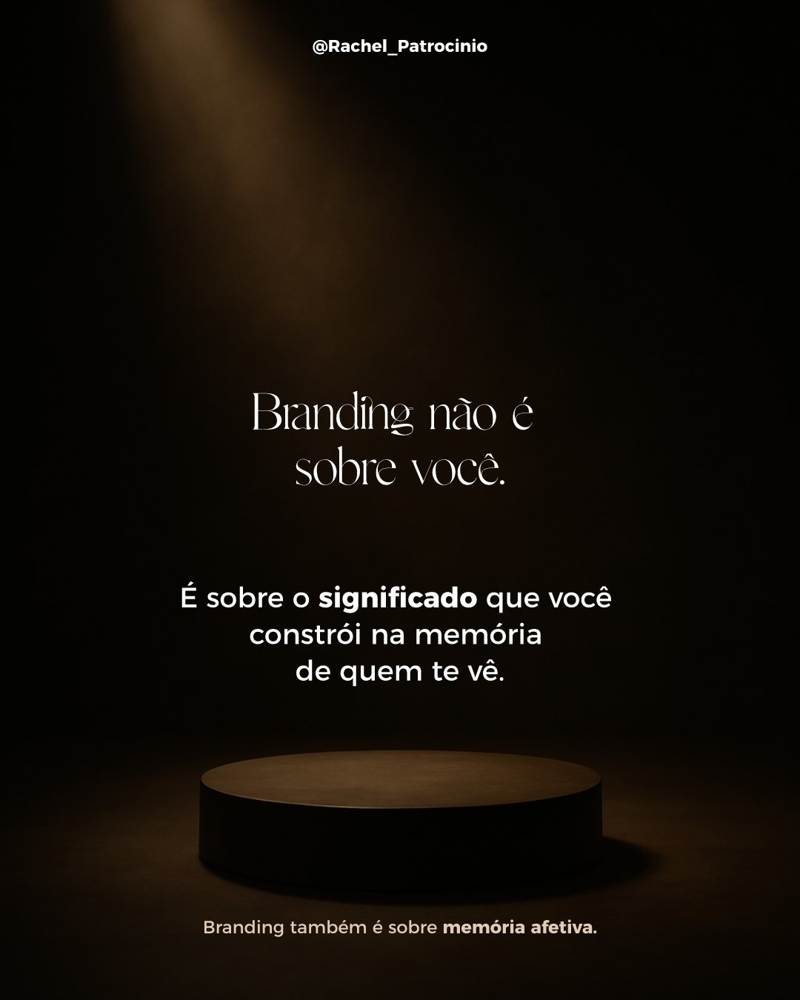
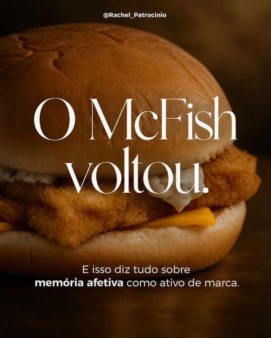
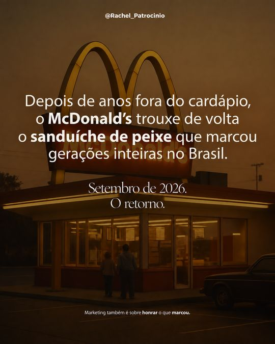
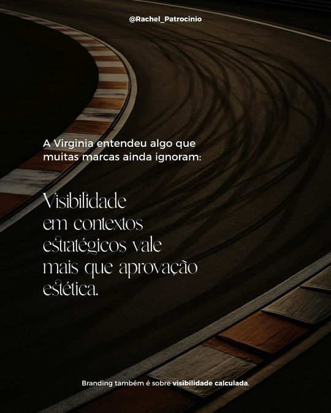
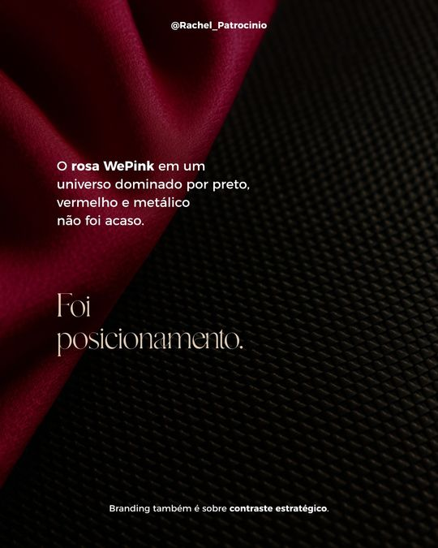

Visão geral do passo a passo e do que acontece por trás.
Quanto as APIs cobram por post (não é cobrança minha), simulador mensal e o que já foi investido.
Dá para enviar posts e imagens de inspiração? E como eu faria.
O que já existe e o que dá para ajustar.
O que a ferramenta ainda não faz bem, com transparência.
Como entrar, testar e usar na rotina.
A ferramenta sugere temas em alta (de no máximo 1 a 2 semanas) ou a Rachel digita o dela.
O sistema gera o carrossel inteiro, em média de 6 a 12 slides.
Gerada automaticamente, ou escrita pela própria Rachel.
PDF ou ZIP com as imagens prontas. Tudo fica salvo na biblioteca.
Sugere pautas atuais, sem repetir as recentes.
Textos, padrão do post e layout de cada slide.
Aplica fontes, cores e posições e gera os PNG finais.
Uma imagem para cada slide, escurecida para leitura.
Guarda posts e temas de forma permanente.
Hospedagem e código. Cada ajuste entra no ar sozinho.

Sugestões para público generalista, sem repetir temas já sugeridos.
Campo livre para a Rachel digitar a ideia ou o roteiro.
A (denso e didático), B (leve, case visual) e C (post-frase).
Fato, interpretação estratégica, princípio de branding e aplicação para qualquer negócio.
Gallient e Montserrat, paleta oficial, @ no topo, tagline no rodapé.
Fundos gerados e escurecidos para dar leitura ao texto.
Automática, ou um campo para a Rachel escrever a dela.
Carrossel inteiro ou imagens separadas, prontas para postar.
Todos os posts e temas salvos, sem perder nada.
Trocar o fundo de qualquer slide: upload próprio ou nova foto por IA.
O próprio site segue a identidade visual da Rachel.
Novas funções entram pelo código, com deploy automático.


Lista, conceito, passo a passo. Para ensinar.


Marcas e campanhas com imagem forte. Para inspirar.
Uma peça única com uma ideia marcante. Para provocar.
Os posts de exemplo e o manual de marca da Rachel viraram regras fixas: padrões, fontes, tamanhos, cores e lógica de roteiro. É por isso que os posts saem com a cara dela.
Um novo estilo pode ser ensinado atualizando essas regras, com apoio técnico.
Descrever a estrutura de um post que ela gostou. O gerador segue, com alguma liberdade de redação. Funciona melhor com roteiro detalhado.
Um botão para enviar a referência direto no site e o gerador "olhar" para ela.
É possível construir. A IA já consegue ler imagens. É a melhor candidata a evolução da ferramenta.
Veja como eu faria no próximo slide.
Botão novo na etapa Tema: imagem, print ou PDF do post de referência.
O Claude analisa a imagem: ritmo, nº de slides, abertura, layout e tom.
Essa leitura entra no pedido daquele post, sem mudar o padrão fixo da marca.
Gerado no estilo da Rachel, seguindo a estrutura da referência. Pode virar formato salvo.
Enviar uma imagem de referência para a OpenAI, que aceita imagens de entrada, e gerar fundos no mesmo clima.
Senha para a equipe, usando o próprio Supabase que já está no projeto. Evita gasto de crédito por quem tiver o link.
Ler imagens consome poucos centavos de dólar por referência. O desenvolvimento é feito no código e entra no ar pelo deploy automático.
Crédito colocado direto nas contas das APIs, não pago a mim.
Rende algumas dezenas de posts, o suficiente para a avaliação. Parte do gasto foi com testes e correções na construção, então o dia a dia tende a custar menos.
Tom de voz, estrutura, vocabulário, nº de slides, tagline.
Fontes, tamanhos, cores, margens, posição do @ e da tagline.
Criar padrões novos, como "gatilho variável + frase fixa".
Filtro de sugestões por público, atualidade e categoria.
Imagem própria ou nova foto por IA, slide a slide.
Automática ou escrita à mão.
Pode variar na redação. Revisar antes de postar.
Por segurança legal, entra um fundo neutro e a foto real é inserida à mão.
Dá para gerar de novo ou enviar outra imagem.
No plano gratuito o site "dorme": o primeiro acesso do dia demora mais.
A busca é boa, mas a IA pode errar detalhes dos temas.
Já ajustada para evitar sobreposição, mas vale revisar.
Ainda não dá para anexar imagem ou PDF.
Quem tiver o link consegue gerar posts e gastar crédito.
A fonte atual é demo, sem uso comercial.
Ela ou a equipe, de onde estiver.
Sugerido ou digitado.
Aguarda de 1 a 2 minutos.
Slides e legenda, automática ou própria.
PDF ou ZIP direto no Instagram.
Troca o fundo de um slide pela Biblioteca.
Para consultar e baixar de novo.
Ver a qualidade das sugestões e do post automático.
Testar com uma ideia que ela já tinha em mente.
Comparar o resultado com os posts feitos à mão.
Gerar 2 a 3 posts de temas diferentes.
Comprar a licença comercial antes de publicar.
Decidir se vale construir essa função.
Proteger o acesso se mais pessoas forem usar.
Definir o crédito das APIs pelo volume de posts.